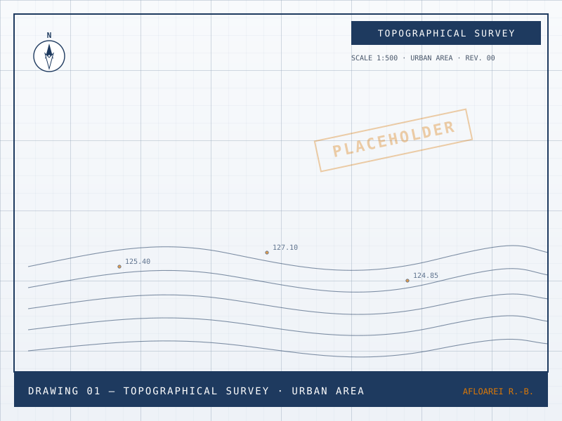
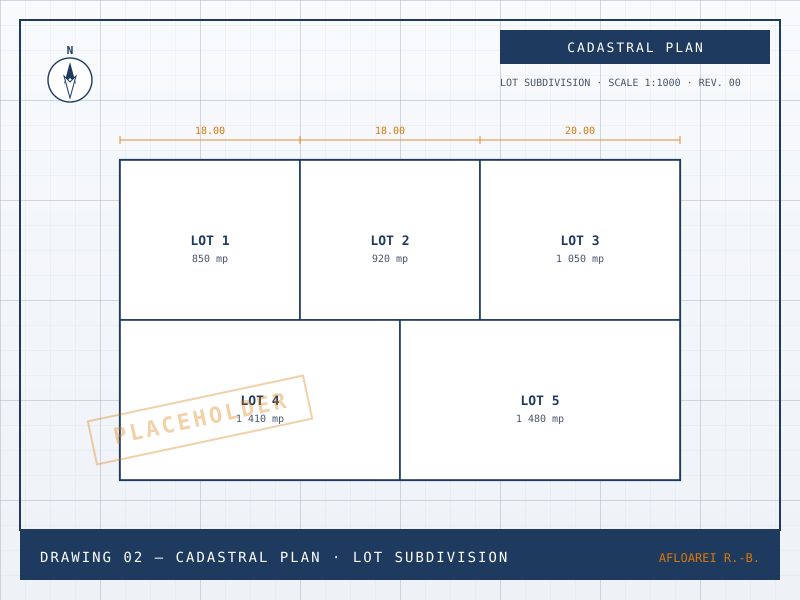
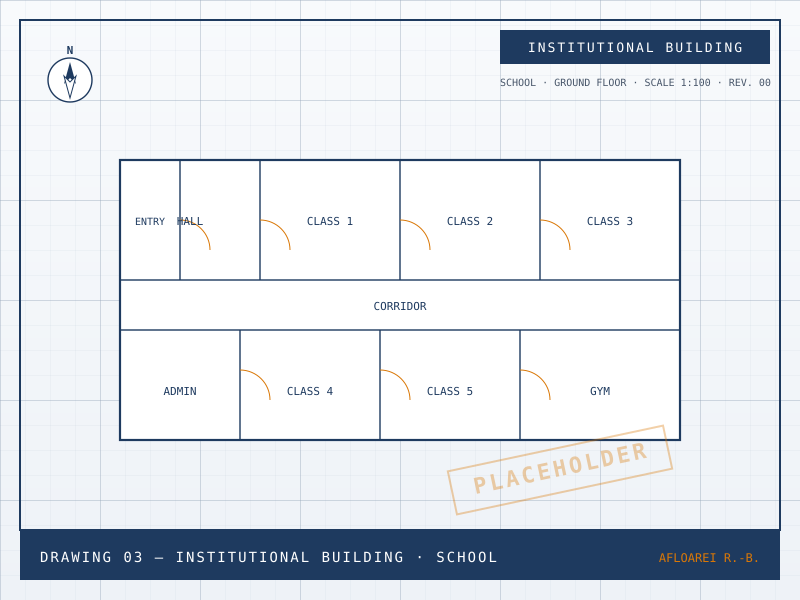
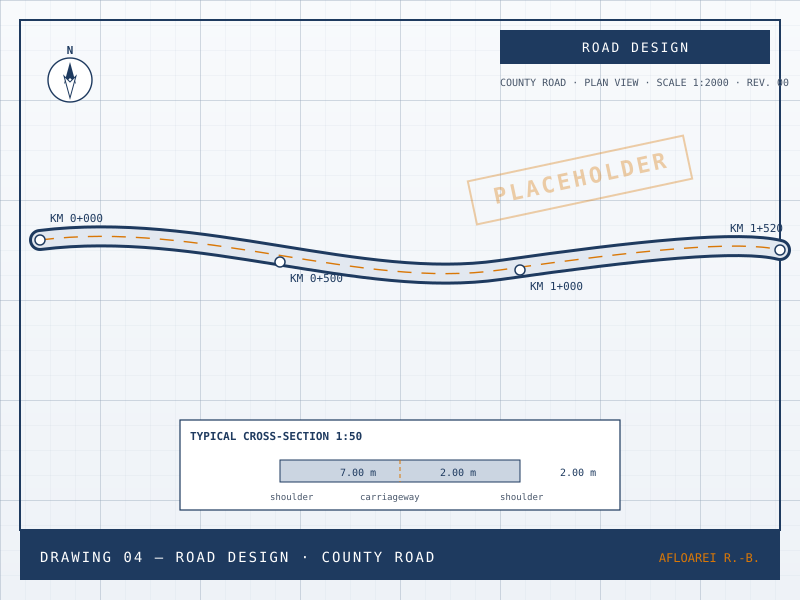
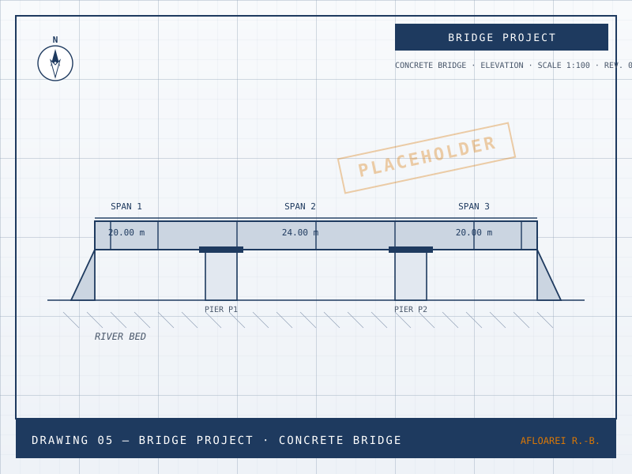
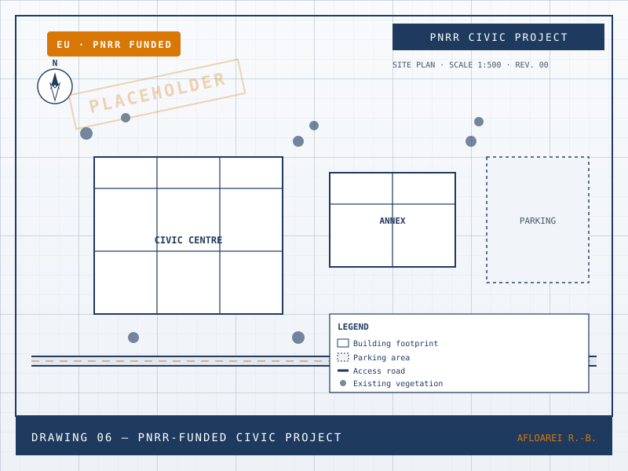

Technical Design · Topography · Civil Engineering
AutoCAD Drafting · Topography & Cadastre · Civil Engineering
Technical design for institutions, roads and bridges — built on private, PNRR, EU and state-funded projects.
About
Precision drawings. Practical experience.
I create technical AutoCAD drawings for topographical surveys, geodesy and cadaster, as well as full design projects in civil engineering — institutional buildings, roads and bridges.
I have delivered projects funded by private clients (institutions and private investors), by the Romanian state, and through European Union instruments — including PNRR, Romania's implementation of the EU Recovery and Resilience Facility (RRF), the main component of NextGenerationEU, the EU's COVID-19 recovery programme. I am open to working with foreign funds, ideally alongside a partner who has already accessed them, so that we can structure the project efficiently from day one.
In the office I focus on making every process I touch as efficient as possible and on delivering the best service I can. I use AI agents — Hermes, a VPS work PC and LLMs — as assistants. They support my work, they don't replace it: the success of the project comes first.
Services
What I deliver
From field survey to permit-ready drawing packages.
-
Topographical Surveys & Geodesy
Land measurements, contour plans and geo-referenced drawings for design and cadaster.
-
Cadastral & Land Registry Plans
Lot subdivisions, parcel updates and plans ready for OCPI / ANCPI submissions.
-
Civil & Institutional Buildings
Schools, town halls and other public buildings — plans, sections and full technical documentation.
-
Roads & Bridges
Alignment, profiles, cross-sections and structural detailing for new builds and rehabilitation.
-
Technical Documentation
Technical memos, specifications, quantity take-offs and drawings ready for permitting.
-
EU / PNRR / State-funded Support
Drawing packages aligned with EU and PNRR (RRF / NextGenerationEU) requirements, as well as Romanian national public-investment procedures.
Portfolio
Selected drawings
Click any project to open its dedicated page — drawings, scope, specs and notes.
-

Topography Topographical Survey — Urban Area -

Cadaster Cadastral Plan — Lot Subdivision -

Civil Building Institutional Building — School -

Road Road Design — County Road -

Bridge Bridge Project — Concrete Bridge -

PNRR / EU PNRR-Funded Civic Project
Contact
Let's talk about your project
Send a short brief, the site address and a timeline. I'll reply within one working day.
Include any relevant drawings, surveys or coordinates if available — it speeds up the first reply.